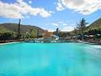
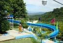

BALNEARIOS Y PARQUE ACUATICO
parque acuatico san carlos

Desde hace más de 30 años, fue fundado San Carlos por un grupo de habitantes de la comunidad,
con el fin de aprovechar las aguas termales que brotan de manera natural para convertirlo en un balneario,
desde el principio siempre fue el objetivo ofrecer día a día instalaciones de primera calidad,
y esforzarnos todos los días por satisfacer las necesidades de nuestros visitantes.
balneario el borbollon

En el balneario "El Borbollón" encontrarás un lugar muy bonito para pasar un día relajado en familia, con un clima excelente
y mucha diversión.
balneario citlalitlan

Nuestro balneario que en náhuatl significa “Lugar de las Estrellas” está localizado en una zona semi desértica donde encontrarás paz y armonía.
REGRESAR AL INICIO